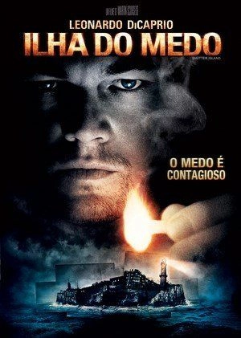
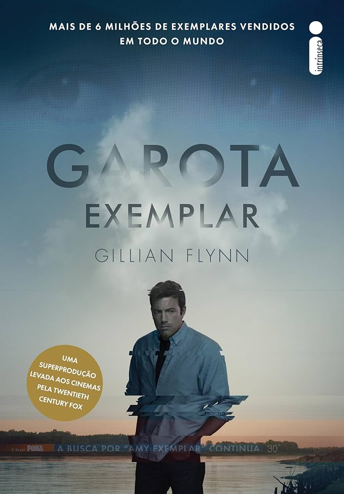
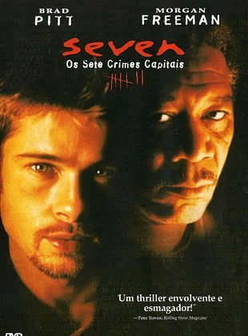
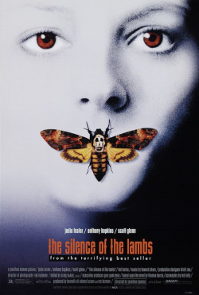

Destaques de Suspense
Ilha do Medo

Gênero: Suspense / Mistério
Lançamento: 2010
Assistir trailer
Nota: ⭐⭐⭐⭐⭐⭐⭐⭐⭐☆ (9/10)
Nos anos 50, a claustrofóbica Ilha de Shutter Island abriga um hospital psiquiátrico para criminosos insanos. O marechal Teddy Daniels e seu novo parceiro Chuck Aule chegam ao local para investigar o desaparecimento inexplicável de uma paciente assassina. No entanto, uma terrível tempestade isola a ilha e Teddy começa a suspeitar que os médicos realizam experimentos radicais e antiéticos nos pacientes. À medida que a investigação avança, Teddy precisa confrontar seus próprios traumas de guerra e a morte de sua esposa, percebendo que nada na ilha é o que parece ser, em um jogo psicológico onde a verdade é o maior mistério.
Garota Exemplar

Gênero: Suspense / Drama
Lançamento: 2014
Assistir trailer
Nota: ⭐⭐⭐⭐⭐⭐⭐⭐☆☆ (8/10)
No dia de seu quinto aniversário de casamento, Amy Dunne desaparece sem deixar rastros. Seu marido, Nick Dunne, torna-se o principal suspeito conforme a polícia e a mídia exploram as rachaduras em seu casamento aparentemente perfeito. Através do diário de Amy, descobrimos uma relação conturbada e cheia de ressentimentos, enquanto no presente, as mentiras e o comportamento estranho de Nick começam a desmoronar sua defesa. O filme mergulha em um jogo psicológico perverso sobre manipulação mediática, aparências sociais e as camadas sombrias que podem existir por trás de uma união estável.
Seven: Os Sete Crimes Capitais

Gênero: Suspense / Crime
Lançamento: 1995
Assistir trailer
Nota: ⭐⭐⭐⭐⭐⭐⭐⭐⭐☆ (9/10)
O veterano detetive William Somerset, prestes a se aposentar, é designado para trabalhar com o impulsivo jovem David Mills em uma cidade mergulhada na chuva e no crime. Juntos, eles caçam um serial killer meticuloso e cruel que escolhe suas vítimas com base nos sete pecados capitais: Gula, Ganância, Preguiça, Luxúria, Orgulho, Inveja e Ira. Cada cena de crime é elaborada como uma peça de arte macabra e punitiva, forçando os detetives a entrarem em um labirinto filosófico e psicológico que culmina em um dos finais mais chocantes e discutidos da história do cinema, provando que o mal pode ser paciente e calculista.
O Silêncio dos Inocentes

Gênero: Suspense / Terror
Lançamento: 1991
Assistir trailer
Nota: ⭐⭐⭐⭐⭐⭐⭐⭐⭐⭐ (10/10)
A jovem estagiária do FBI, Clarice Starling, é escalada para uma missão perigosa: entrevistar um dos assassinos mais inteligentes e letais do mundo, o psiquiatra canibal Dr. Hannibal Lecter. O objetivo é obter pistas sobre um novo serial killer conhecido como Buffalo Bill, que sequestra e esfolia suas vítimas. Entre Clarice e Lecter surge uma relação de troca psicológica tensa, onde ele exige segredos do passado dela em troca de perfis criminais. O filme é um estudo profundo sobre a natureza da maldade e a coragem necessária para enfrentar os próprios demônios enquanto se caça um monstro no mundo real.
Corra!
Gênero: Suspense / Terror
Lançamento: 2017
Assistir trailer
Nota: ⭐⭐⭐⭐⭐⭐⭐⭐☆☆ (8/10)
Chris é um jovem fotógrafo negro que viaja para o interior para conhecer os pais de sua namorada branca, Rose. A princípio, ele interpreta o comportamento excessivamente hospitaleiro e estranho da família como tentativas nervosas de lidar com o relacionamento interracial. No entanto, com o passar do tempo e uma série de incidentes bizarros envolvendo os funcionários da casa e os convidados de uma festa anual, Chris descobre uma conspiração sinistra que vai além de qualquer preconceito imaginável. O filme mistura suspense psicológico com crítica social, transformando um encontro familiar em um pesadelo de sobrevivência inesquecível.